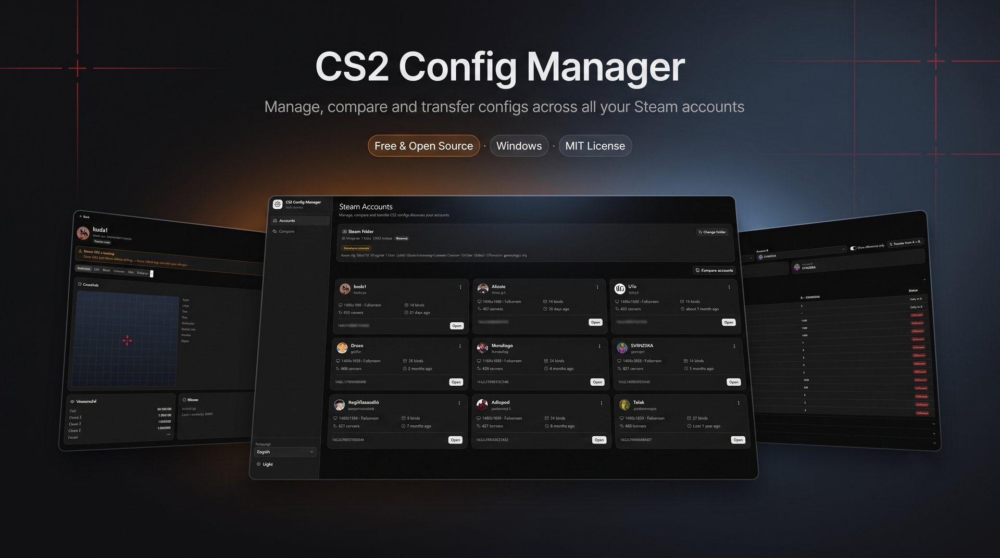

Automatic Steam detection
Finds your Steam install via the registry and lists every account with CS2 configs — avatars, resolution, binds and last played at a glance.
Free & open source · Windows
Manage, compare and transfer Counter-Strike 2 configs across multiple Steam accounts — with automatic backups and a live crosshair preview.
Windows 10/11 · 64-bit · MIT License

Built for players who juggle more than one Steam account.
Finds your Steam install via the registry and lists every account with CS2 configs — avatars, resolution, binds and last played at a glance.
Video, crosshair (with live preview), viewmodel, mouse, radar/HUD, binds and 400+ convars — friendly editors plus a raw file editor.
Copy video, convars and binds (or everything) to another account in two clicks. Steam Cloud–aware: configs survive the next game launch.
Side-by-side diff of two accounts' configs, grouped by category, with a "differences only" filter.
Every edit, transfer or restore snapshots your files first. Manual snapshots and one-click restore included.
Browse each account's CS2 screenshots (Steam F12 captures) right in the profile, and jump to the cfg folder in one click.
Grab the latest *-setup.exe from Releases and run it. Windows may show a SmartScreen warning — click More info → Run anyway (the installer is not code-signed yet).
Before editing or transferring, close the game (and preferably Steam) so Steam Cloud can't overwrite your changes. The app warns you when either is running.
Pick an account to view, edit, compare, transfer or back up its configs — all changes are snapshotted automatically.
Everything lives in the repository — pick your language.
Features, install guide, development setup and project structure.
Open ↗Funcionalidades, instalação, setup de desenvolvimento e estrutura do projeto.
Open ↗Every version, installer downloads and what changed.
Open ↗Found a bug or have an idea? Open an issue — contributions welcome.
Open ↗